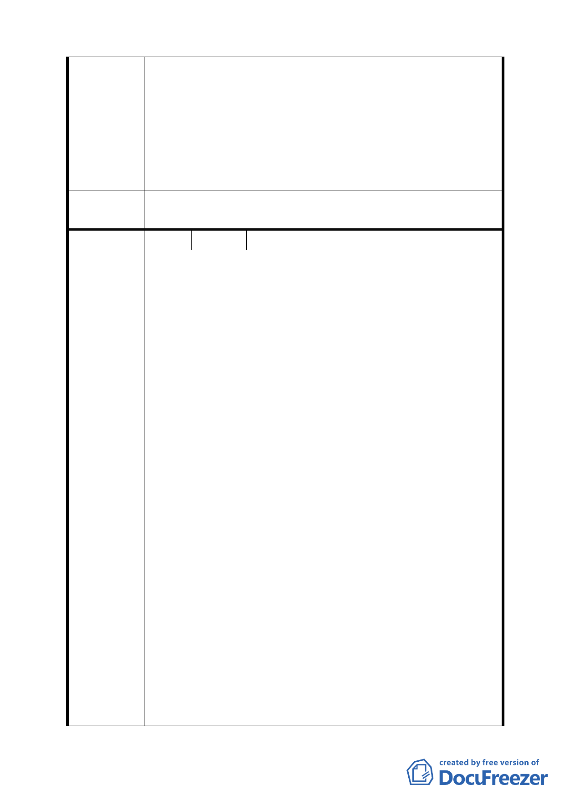

和對附近居民的影響。
2. 原國中預定地之面積做為公共空間，將住三 R17 建地與周
邊綠地結合，做為地下停車場、地面公園，以解決居民停
車問題，而政府開發 16 公頃土地連一個停車場也沒有；至
於機關用地地下室做停車場，以它的面積僅能供機關停車。
3. 機關用地做為北投行政中心用地，將北投各行政機關集
中，讓北投區民眾有一個舒適的洽公空間。
委員會決議 依市府所送「第 574 次臺北市都市計畫委員會議決議回應資
料」修正後通過。
編 號 4 陳情人 陳光輝
請維持臺北市政府於 93 年 11 月發佈的北投區奇岩新社區細
部計畫案，並撤回 96 年 5 月提出的新計畫案。
1. 新計畫案是為保護二十一株『珍貴』樹木（其實僅一株印
度橡膠樹、一株山麻黃，其餘為榕樹，樹齡皆在二十年左
右或下）。台北市文化局如何將保護此當代栽種之植物，與
興建十七公頃左右之市區，能容納五千人民眾千百年舒適
居住之社區的重要性作比較。其價值觀何在，亦無提出詳
細說明。僅憑保護之名而將本來已經審議通過並發佈之原
計畫案一筆勾銷，實難苟同。何況愚公可以移山，難道智
民不能移樹：當代栽種之樹。
2. 新計畫案與已經審議通過並公佈於世的原計畫案，在土地
使用面積分配情形、街廓道路方向、綠地設置等等整體形
陳 情 理 由 象可以說幾乎相同；唯一差別就是將國中用地分配取消，
改為追加公園用地。使公園面積分配率佔全社區四分之
ㄧ，加上綠地面積則比率上升至三分之ㄧ。把變更後的新
增加的大部分公園面積拉長成線條狀沿磺港路設置『河岸
景觀綠廊』。將來國中用地需求再起，附近何處尋覓。再者，
如此大比率之空曠度，除市容外，其使用應符合北投區全
體居民之安全與福利。
3. 新計畫案企圖把磺港溪裝扮成『河岸景觀綠廊風貌』。豈知
此溪乃山洪排水洩道，平時水量稀少溪底硫磺水潺潺細水
流，「黃」硫磺水草目不宜，又有刺鼻氣味；颱風或大雨時
節洪水為患，附近遊人處處危險。古早颱風來臨，有失足
跌落溪中溺斃而流至田園者。現若將公園拉長沿數公尺高
河岸步置，豈非於公園邊造成一長而大的陷阱。要是將原
11